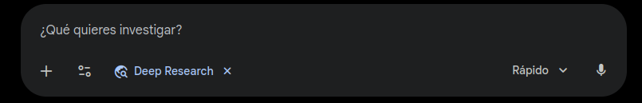

Inteligencia Artificial
Objetivo
Contrastar nuestras ideas sobre la IA con las fuentes de información y generar términos comunes de cómo debería ser usada la IA en los procesos educativos.
¿Qué sabemos de la IA?
ChatGPT
¿Qué es un prompt?

Desafío 1
Formen duplas: un integrante ingresará a ChatGPT de OpenAI y el otro a Gemini de Google.
Desafío 2
De forma individual, añadan los documentos que consideren pertinentes para investigar los alcances éticos y morales del uso de la IA en los procesos educativos.
- Currículos de IA ...
- La IA generativa ...
- Marco de [...] Estudiantes
- Marco de [...] Docentes
- Innovación e inversión
- Educación y política
Pueden encontrar los textos en U-Cursos.
Desafío 3
Con su dupla, generen términos comunes sobre cómo debería ser usada la IA en los procesos educativos.
Escriban al menos 4 términos comunes.
Desafío 4
Individualmente, indiquen a la IA que contraste sus términos comunes con los textos.
¿Es la IA una herramienta (ecosistema) para el aprendizaje?
De ser así, ¿cómo la usamos en el aula?
De no serlo, ¿cómo la regulamos?